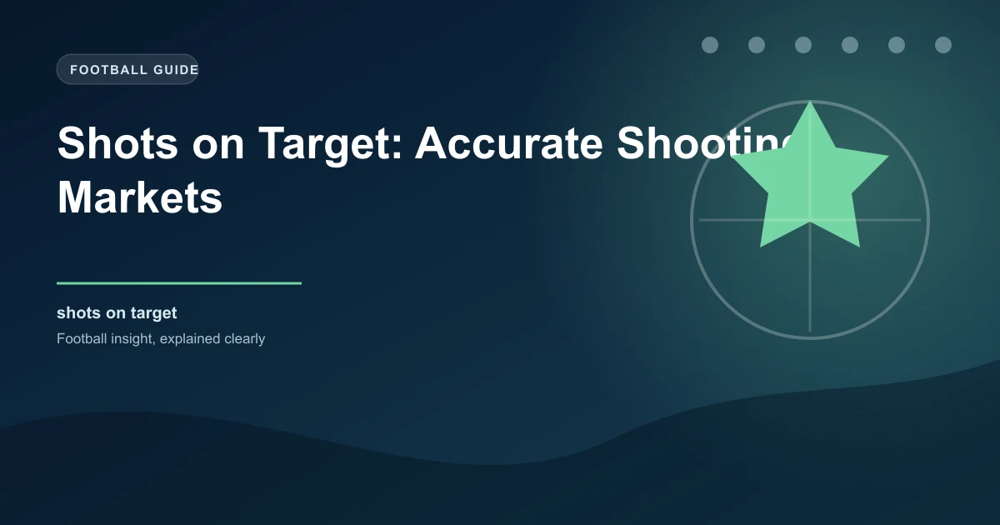

Shots on target (SOT) betting has exploded in popularity as bettors realise it offers more predictable outcomes than traditional markets. Unlike goals, which are low-frequency events with high variance, shots on target happen more often, giving statistical models more data to work with.
This comprehensive guide covers everything from basic SOT definitions to building your own predictive model. Whether you're betting on over/under SOT lines or individual player shots, these strategies will sharpen your edge.
A shot on target is any shot that would go into the goal if not saved by the goalkeeper or cleared off the line by an outfield player. Shots that hit the woodwork, are blocked by defenders, or go wide are NOT counted as shots on target.
This distinction is crucial. Shots off target include blocked shots, which often inflate a team's total shot count without reflecting genuine threat. SOT provides a much clearer picture of attacking quality.
| Stat | Definition | Example |
|---|---|---|
| Shot on Target | Shot heading towards goal unless saved | Striker forces a save from keeper |
| Shot Off Target | Shot missing the goal frame | Ball goes wide or over the bar |
| Blocked Shot | Shot blocked by defender before reaching goal | CB slides to deflect the strike |
| Shot on Woodwork | Shot hitting post or crossbar | Free kick hits the crossbar |
Understanding baseline SOT averages by league is the foundation of any SOT betting strategy. Different leagues have vastly different SOT profiles based on playing style, tactical approaches, and overall quality.
| League | Avg SOT per Match | Avg SOT per Team | Avg Goals per Match |
|---|---|---|---|
| Premier League | 9.8 | 4.9 | 2.8 |
| Bundesliga | 10.4 | 5.2 | 3.1 |
| Serie A | 9.2 | 4.6 | 2.6 |
| La Liga | 9.5 | 4.75 | 2.7 |
| Ligue 1 | 9.0 | 4.5 | 2.5 |
| Eredivisie | 11.2 | 5.6 | 3.4 |
| Portuguese Liga | 8.8 | 4.4 | 2.4 |
| Championship | 8.5 | 4.25 | 2.3 |
Use FBref for historical SOT data, Understat for expected metrics, and WhoScored for per-match shot breakdowns.
The relationship between SOT and goals is well-documented. On average, approximately 25-30% of shots on target result in goals, though this varies significantly by:
Team A generates 6 SOT in a match. At the average 27% conversion rate, expected goals would be ~1.62. If Team A's striker is a 35% finisher and facing a weak keeper (65% save rate), the expected goals rise further.
This is why xG models are valuable - they adjust conversion rates based on shot quality, not just raw SOT count.
The most common SOT betting market is over/under lines on total team SOT. Typical lines range from 3.5 to 6.5 depending on team strength and opponent.
| Team Type | Typical Over/Under Line | Strategy |
|---|---|---|
| Elite attack vs weak defence | Over 5.5 | Bet the over - top teams average 6+ SOT vs weak sides |
| Mid-table clash | Over 4.5 | League average - look for form mismatches |
| Defensive team vs strong attack | Under 3.5 | Bet the under - negative teams limit SOT |
| Two defensive teams | Under 3.5 | Strong under candidate - low event match |
Identifying teams that consistently outperform or underperform SOT lines is key to long-term profitability.
Many bookmakers now offer player-specific SOT markets. The most common lines are over/under 0.5, 1.5, or 2.5 SOT for individual players.
| Player Type | Avg SOT per Game | Best Market |
|---|---|---|
| Striker (Haaland, Kane) | 2.0-3.5 | Over 1.5 SOT |
| Wide forward (Salah, Mbappe) | 1.5-2.5 | Over 1.5 SOT |
| Attacking midfielder (De Bruyne) | 1.0-2.0 | Over 0.5 SOT |
| Defensive midfielder | 0.2-0.5 | Avoid - too unpredictable |
| Defender (set-piece threat) | 0.3-0.8 | Only if they take penalties |
Check Transfermarkt for player profiles, Soccerway for match-by-match shot data, and FBref for per-90-minute SOT averages.
Live SOT betting opens up tremendous opportunities because bookmakers adjust lines more slowly than the action warrants.
Teams often start aggressively. If a team has 2 SOT in the first 15 minutes, their live line might still be at 4.5 - offering value on the over as they're on pace for 6+.
When a team goes down to 10 men, their SOT output drops 40-60% in the remaining time. The opposing team's SOT line often doesn't adjust fast enough.
Teams leading at half-time often reduce attacking intensity. If a team leads 2-0 at half with only 3 SOT, backing under their full-time SOT line offers value.
When a team substitutes their main creative threat or striker, SOT output typically drops. Conversely, bringing on attacking substitutes late can boost SOT counts in the final 15-20 minutes.
A basic SOT model can give you a significant edge over recreational bettors. Here's a framework to get started:
Collect 3-5 seasons of SOT data from FBref or Understat. Store in a spreadsheet database with: team, opponent, venue, SOT for, SOT against, and match date.
For each team, calculate home and away SOT averages separately. Use a weighted average giving more weight to recent matches (last 5 games = 50%, last 10 games = 30%, rest = 20%).
Calculate each team's defensive SOT conceded average. A team averaging 5 SOT for but facing a defence conceding only 3.5 SOT should be adjusted downward.
Home teams typically generate 15-20% more SOT than away teams. Adjust your baseline accordingly.
Consider: recent form last 5 games, head-to-head SOT history, key player availability, match importance, weather conditions, and referee tendencies.
Manchester City (home) vs Southampton (away):
Beyond raw SOT counts, these advanced metrics improve your betting decisions:
| Stat | What It Tells You | Where to Find It |
|---|---|---|
| SOT Ratio | Team SOT / Total shots - measures shot efficiency | FBref |
| SOT Differential | SOT for minus SOT against - overall shooting dominance | WhoScored |
| xG per SOT | Expected goals per shot on target - shot quality metric | Understat |
| SOT Conversion Rate | Goals / SOT - finishing efficiency | FBref |
| Open Play vs Set Piece SOT | How teams generate their shots | Soccerway |
The Premier League averages approximately 9.8 total SOT per match (4.9 per team). This has remained relatively stable over the past 5 seasons.
Both have value. xG provides shot-quality context while SOT measures actual dangerous attempts. Using both together gives the most complete picture.
Bet365, Pinnacle, and Betfair offer the widest SOT markets. Check OddsPortal to compare SOT lines across different bookmakers.
Elite strikers convert 30-35% of their SOT into goals. The league average for all positions is approximately 25-27%.
Yes, most major bookmakers offer in-play SOT markets. Live betting often provides the best value as lines adjust slower than the match action.
The Bundesliga and Eredivisie typically offer the most volatile and predictable SOT patterns due to their open, attacking styles of play.
For team analysis, at least 10 home/away games. For player analysis, at least 20 appearances. The larger the sample, the more reliable the averages.
Significantly. Teams like Atletico Madrid, Juventus, and Burnley consistently limit opponents to 2-3 SOT per game, making under bets attractive.
6+ SOT in a match is considered high for a single team, 2-3 is low, and 4-5 is average for top-flight football.
Heavy rain and strong wind reduce SOT by 10-15% on average. Poor conditions lead to more speculative shots that miss the target.
Apply these strategies to today's matches and find value in SOT markets:
Generate optimized accumulator combinations from today's AI-powered predictions. Set your target odds and get instant ticket suggestions.
Free Ticket Builder →